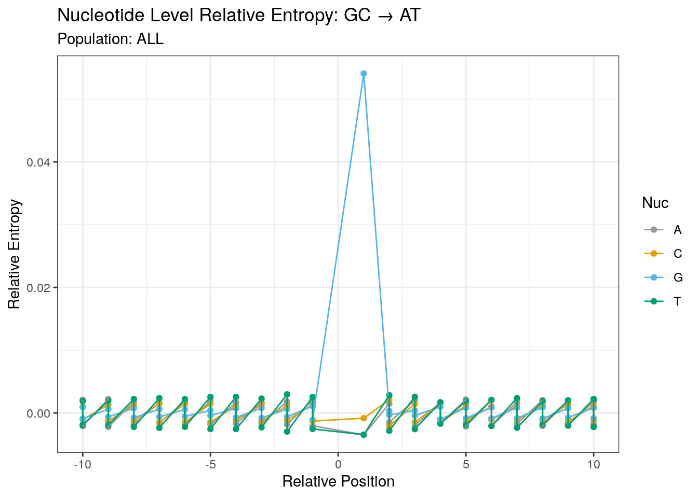
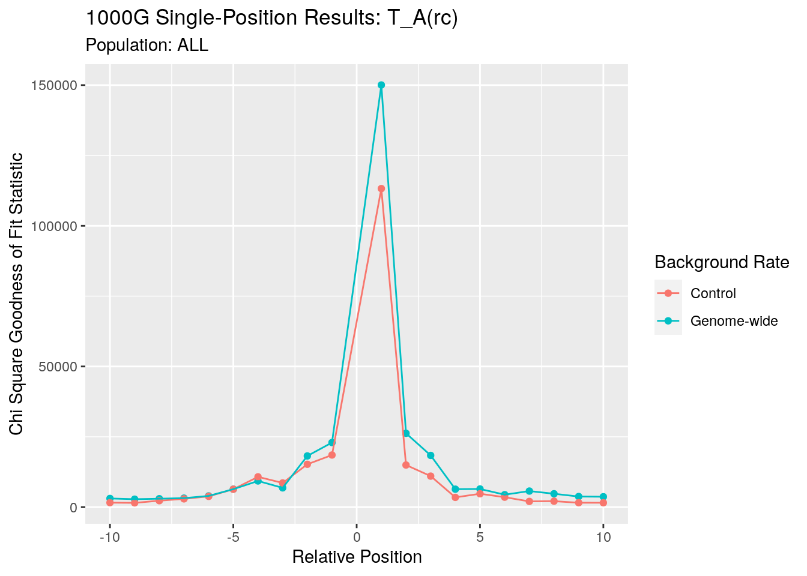
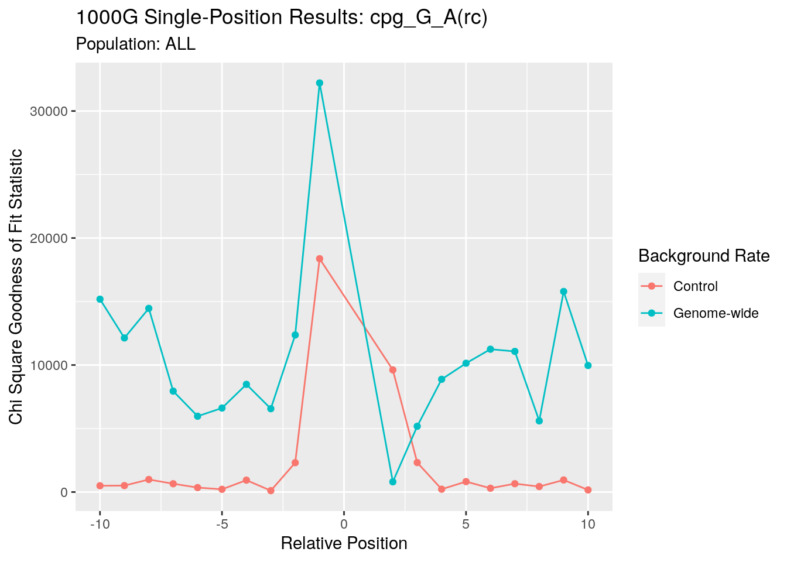
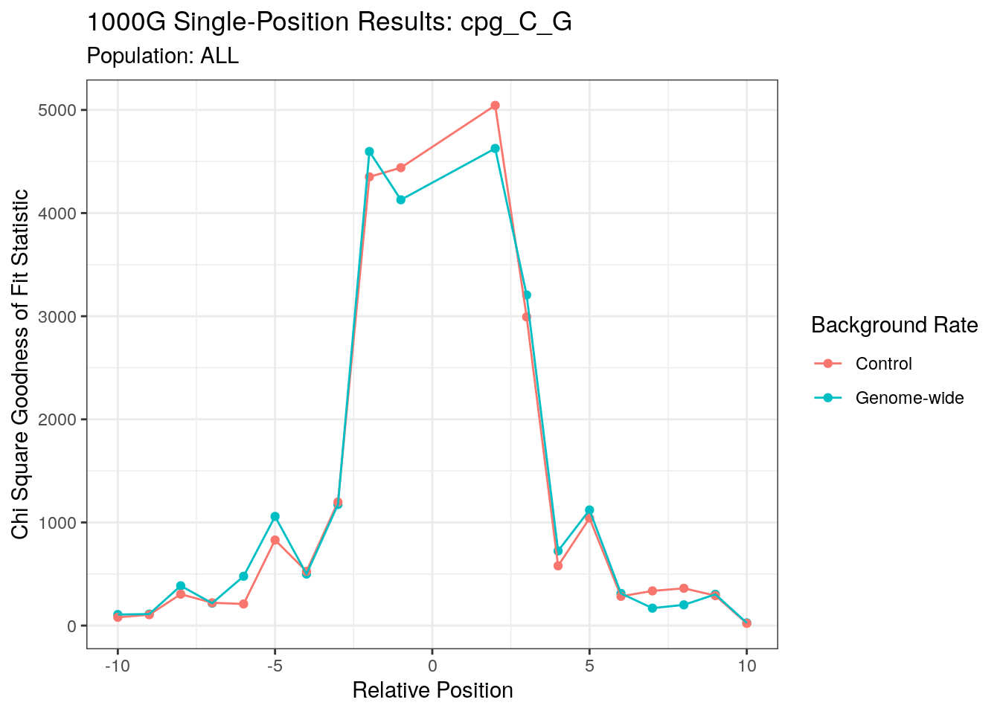
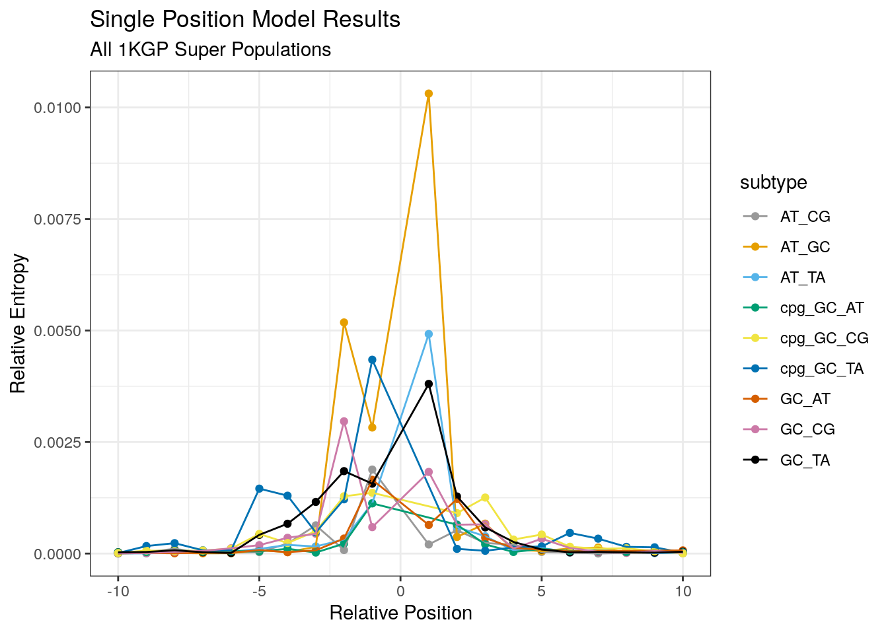

1000G_single_position_ALL
Andy Beck
2021-11-01
Last updated: 2021-12-15
Checks: 6 1
Knit directory: LSCI/
This reproducible R Markdown analysis was created with workflowr (version 1.6.2). The Checks tab describes the reproducibility checks that were applied when the results were created. The Past versions tab lists the development history.
Great! Since the R Markdown file has been committed to the Git repository, you know the exact version of the code that produced these results.
Great job! The global environment was empty. Objects defined in the global environment can affect the analysis in your R Markdown file in unknown ways. For reproduciblity it’s best to always run the code in an empty environment.
The command set.seed(20211101) was run prior to running the code in the R Markdown file. Setting a seed ensures that any results that rely on randomness, e.g. subsampling or permutations, are reproducible.
Great job! Recording the operating system, R version, and package versions is critical for reproducibility.
Nice! There were no cached chunks for this analysis, so you can be confident that you successfully produced the results during this run.
Using absolute paths to the files within your workflowr project makes it difficult for you and others to run your code on a different machine. Change the absolute path(s) below to the suggested relative path(s) to make your code more reproducible.
| absolute | relative |
|---|---|
| /net/snowwhite/home/beckandy/research/documentation/LSCI/output/tikz/single_pos/1KGP_chisq_ | output/tikz/single_pos/1KGP_chisq_ |
| /net/snowwhite/home/beckandy/research/documentation/LSCI/output/tikz/single_pos/1KGP_cohen_ | output/tikz/single_pos/1KGP_cohen_ |
| /net/snowwhite/home/beckandy/research/documentation/LSCI/output/tikz/single_pos/cohen_all_1kgp.tex | output/tikz/single_pos/cohen_all_1kgp.tex |
| /net/snowwhite/home/beckandy/research/documentation/LSCI/output/tikz/single_pos/1KGP_nuc_sp_ | output/tikz/single_pos/1KGP_nuc_sp_ |
| /net/snowwhite/home/beckandy/research/documentation/LSCI/output/tikz/single_pos/1KGP_signed_nuc_sp_ | output/tikz/single_pos/1KGP_signed_nuc_sp_ |
Great! You are using Git for version control. Tracking code development and connecting the code version to the results is critical for reproducibility.
The results in this page were generated with repository version 94a8c28. See the Past versions tab to see a history of the changes made to the R Markdown and HTML files.
Note that you need to be careful to ensure that all relevant files for the analysis have been committed to Git prior to generating the results (you can use wflow_publish or wflow_git_commit). workflowr only checks the R Markdown file, but you know if there are other scripts or data files that it depends on. Below is the status of the Git repository when the results were generated:
Ignored files:
Ignored: .Rhistory
Ignored: .Rproj.user/
Ignored: analysis/1000G_single_postion_comp_cache/
Ignored: analysis/disqus.html
Ignored: analysis/figure/
Untracked files:
Untracked: 1000G_single_position_ALL-tikzDictionary
Untracked: BRIDGES_single_position-tikzDictionary
Untracked: BRIDGES_summary_stats-tikzDictionary
Untracked: output/tikz/
Unstaged changes:
Modified: analysis/BRIDGES_summary_stats.Rmd
Note that any generated files, e.g. HTML, png, CSS, etc., are not included in this status report because it is ok for generated content to have uncommitted changes.
These are the previous versions of the repository in which changes were made to the R Markdown (analysis/1000G_single_position_ALL.Rmd) and HTML (docs/1000G_single_position_ALL.html) files. If you’ve configured a remote Git repository (see ?wflow_git_remote), click on the hyperlinks in the table below to view the files as they were in that past version.
| File | Version | Author | Date | Message |
|---|---|---|---|---|
| Rmd | 94a8c28 | Andy Beck | 2021-12-15 | wflow_publish("analysis/1000G_single_position_ALL.Rmd") |
| html | d54d5aa | Andy Beck | 2021-12-15 | Build site. |
| Rmd | 22ffdfc | Andy Beck | 2021-12-15 | wflow_publish("analysis/1000G_single_position_ALL.Rmd") |
| html | bcee610 | Andy Beck | 2021-11-09 | update site to include disqus |
| html | 45e9d3d | Andy Beck | 2021-11-03 | Build site. |
| Rmd | a2af1c5 | Andy Beck | 2021-11-03 | 1000G+B sp models |
| html | ddbf849 | Andy Beck | 2021-11-03 | Build site. |
| Rmd | b9b88b2 | Andy Beck | 2021-11-03 | Finshed ALL analysis for single position models |
| html | 277edee | Andy Beck | 2021-11-02 | Build site. |
| Rmd | 203fd4a | Andy Beck | 2021-11-02 | add 18 subtype analysis |
| Rmd | 6842cad | Andy Beck | 2021-11-01 | flesh out some pages |
| html | 6842cad | Andy Beck | 2021-11-01 | flesh out some pages |
1000G Single Position Models - All
Introduction
Here in this document we present the results for the single position models using the singletons from all 2,504 unrelated individuals in the 1000G deep sequence data. Comparisons between the five super-populations can be found in the comparison document. First we’ll look at both the collapsed and un-collapsed categories to verify that we do not lose information when we take reverse-complements.
Model Descriptions
For each singleton sub-type, we evaluate the “independent influence” of nucleotides at flanking positions up to 10 bases up or down-stream from the site of interest by modeling the observed count table
| Nucleotide | N |
|---|---|
| A | \(n_A\) |
| C | \(n_C\) |
| G | \(n_G\) |
| T | \(n_T\) |
using rates we observe nucleotides flanking the same reference allele genome-wide or in a sample of control observations sampled for each singleton. That is, for each nucleotide we compute an expected count based on the frequency observed in either the genome-wide distribution or the control sample ( $ e_{X,i} = _{X,i} n_S$ ) and use the chi-square goodness of fit statistic to assess deviance from this null model (i.e. are singletons uniformly sampled from either the genome-wide or control distribution)?
\[ \chi_i = \sum_{x \in \{A,C,G,T\} }\frac{(n_{x,i} - e_{x,i})^2}{e_{x,i}}, i \in (-10,-1),(1,10) \]
9 Subtype Results
The nine basic subtypes are AT_CG, AT_GC, AT_TA, GC_AT, GC_TA, GC_CG, cpg_GC_AT, cpg_GC_TA, and cpg_GC_CG, where the notation XY_JK indicates we either observed a X>J or Y>K substitution, with XY and JK being complementary to each other. For each sub-type with reference alleles XY and position i within a 21-mer window centered at the singleton, we model the distributions of nucleotides A, C, G and T flanking the singletons using the rates we observe either genome-wide flanking the reference nucleotides XY at the same relative position or the rates of nucleotides flanking control positions sampled for each singleton. We use the chi-square goodness of fit statistic to “measure” the degree to which this model doesn’t hold. First, let’s plot the deviance statistics we observe at each relative position for each sub-type.
Singletons per Subtype
| ALL | AFR | AMR | EAS | EUR | SAS | |
|---|---|---|---|---|---|---|
| AT_CG | 3994644 | 1160586 | 490617 | 871253 | 653113 | 819915 |
| AT_GC | 13689402 | 3958441 | 1735039 | 3070427 | 2207497 | 2719543 |
| AT_TA | 3620603 | 1032682 | 447998 | 828306 | 586770 | 725607 |
| GC_AT | 12388995 | 3583196 | 1572949 | 2721559 | 1977163 | 2535890 |
| GC_CG | 4246208 | 1253167 | 528073 | 939800 | 684128 | 841931 |
| GC_TA | 4576214 | 1327907 | 568874 | 1013793 | 743282 | 923166 |
| cpg_GC_AT | 5990034 | 1749306 | 748097 | 1315852 | 965863 | 1211353 |
| cpg_GC_CG | 389681 | 109897 | 49895 | 86088 | 62986 | 80857 |
| cpg_GC_TA | 492238 | 142803 | 59752 | 109941 | 77637 | 102155 |
AT_CG
png
2 png
2 

| Version | Author | Date |
|---|---|---|
| d54d5aa | Andy Beck | 2021-12-15 |
| pos | singletons | cohen | Control | Genome-wide |
|---|---|---|---|---|
| -10 | 3994644 | 0.0306510 | NA | 3752.8968 |
| -10 | 3994644 | 0.0312846 | 3909.664 | NA |
| -9 | 3994644 | 0.0298124 | NA | 3550.3463 |
| -9 | 3994644 | 0.0362986 | 5263.284 | NA |
| -8 | 3994644 | 0.0591715 | NA | 13986.3230 |
| -8 | 3994644 | 0.0625766 | 15642.334 | NA |
| -7 | 3994644 | 0.0389788 | NA | 6069.2482 |
| -7 | 3994644 | 0.0390333 | 6086.249 | NA |
| -6 | 3994644 | 0.0150474 | NA | 904.4875 |
| -6 | 3994644 | 0.0187330 | 1401.820 | NA |
| -5 | 3994644 | 0.0229486 | NA | 2103.7250 |
| -5 | 3994644 | 0.0329934 | 4348.420 | NA |
| -4 | 3994644 | 0.0518004 | NA | 10718.7472 |
| -4 | 3994644 | 0.0668532 | 17853.466 | NA |
| -3 | 3994644 | 0.1044022 | NA | 43540.9054 |
| -3 | 3994644 | 0.1049008 | 43957.768 | NA |
| -2 | 3994643 | 0.0335140 | 4486.748 | NA |
| -2 | 3994643 | 0.0495607 | NA | 9811.8987 |
| -1 | 3994644 | 0.1602394 | NA | 102569.0783 |
| -1 | 3994644 | 0.1659863 | 110058.267 | NA |
| 1 | 3994643 | 0.0619535 | NA | 15332.3724 |
| 1 | 3994643 | 0.0793800 | 25170.984 | NA |
| 2 | 3994644 | 0.0893863 | 31916.849 | NA |
| 2 | 3994644 | 0.1106856 | NA | 48939.5782 |
| 3 | 3994644 | 0.0598141 | 14291.747 | NA |
| 3 | 3994644 | 0.0787504 | NA | 24773.3056 |
| 4 | 3994644 | 0.0529197 | 11186.963 | NA |
| 4 | 3994644 | 0.0731214 | NA | 21358.2930 |
| 5 | 3994644 | 0.0414573 | 6865.633 | NA |
| 5 | 3994644 | 0.0474463 | NA | 8992.5352 |
| 6 | 3994644 | 0.0212254 | 1799.656 | NA |
| 6 | 3994644 | 0.0267627 | NA | 2861.1320 |
| 7 | 3994644 | 0.0280936 | 3152.780 | NA |
| 7 | 3994644 | 0.0328364 | NA | 4307.1307 |
| 8 | 3994644 | 0.0300714 | 3612.311 | NA |
| 8 | 3994644 | 0.0356283 | NA | 5070.7123 |
| 9 | 3994644 | 0.0362637 | 5253.175 | NA |
| 9 | 3994644 | 0.0369575 | NA | 5456.1096 |
| 10 | 3994644 | 0.0213354 | NA | 1818.3573 |
| 10 | 3994644 | 0.0232171 | 2153.249 | NA |
Here we see that the results for both the genome-wide rate and the control distribution rate models tell essentially the same story about the marginal influence of nucleotides at each position: the strongest influence (or deviation from expectation) occurs at the -1 relative position, and in general decreases as we move further from the focal site. Although the statistics do drop drastically as we move towards +/- 10, the unadjusted statistics are still statistically significant (chi-square null distribution with 4 - 1 = 3 degrees of freedom).
AT_GC
png
2 png
2 
| Version | Author | Date |
|---|---|---|
| d54d5aa | Andy Beck | 2021-12-15 |
| pos | singletons | cohen | Control | Genome-wide |
|---|---|---|---|---|
| -10 | 13689402 | 0.0149223 | 3048.305 | NA |
| -10 | 13689402 | 0.0338821 | NA | 15715.359 |
| -9 | 13689402 | 0.0142819 | 2792.281 | NA |
| -9 | 13689402 | 0.0267884 | NA | 9823.748 |
| -8 | 13689401 | 0.0203545 | NA | 5671.571 |
| -8 | 13689401 | 0.0244984 | 8216.018 | NA |
| -7 | 13689400 | 0.0290724 | 11570.305 | NA |
| -7 | 13689400 | 0.0324270 | NA | 14394.557 |
| -6 | 13689401 | 0.0269145 | 9916.471 | NA |
| -6 | 13689401 | 0.0323722 | NA | 14345.903 |
| -5 | 13689401 | 0.0350608 | 16827.807 | NA |
| -5 | 13689401 | 0.0526293 | NA | 37917.544 |
| -4 | 13689402 | 0.0192774 | 5087.232 | NA |
| -4 | 13689402 | 0.0321786 | NA | 14174.861 |
| -3 | 13689401 | 0.0467094 | 29867.136 | NA |
| -3 | 13689401 | 0.0740247 | NA | 75013.116 |
| -2 | 13689402 | 0.2578452 | NA | 910127.991 |
| -2 | 13689402 | 0.2667772 | 974275.833 | NA |
| -1 | 13689401 | 0.1896103 | 492162.419 | NA |
| -1 | 13689401 | 0.2144772 | NA | 629718.739 |
| 1 | 13689401 | 0.3745844 | 1920807.543 | NA |
| 1 | 13689401 | 0.4151838 | NA | 2359746.444 |
| 2 | 13689402 | 0.0681921 | NA | 63657.891 |
| 2 | 13689402 | 0.0859166 | 101050.477 | NA |
| 3 | 13689402 | 0.0986990 | NA | 133355.243 |
| 3 | 13689402 | 0.1076718 | 158704.205 | NA |
| 4 | 13689402 | 0.0280870 | 10799.255 | NA |
| 4 | 13689402 | 0.0532977 | NA | 38886.731 |
| 5 | 13689402 | 0.0278397 | 10609.967 | NA |
| 5 | 13689402 | 0.0552817 | NA | 41835.704 |
| 6 | 13689402 | 0.0328395 | 14763.085 | NA |
| 6 | 13689402 | 0.0504189 | NA | 34799.355 |
| 7 | 13689402 | 0.0543365 | 40417.300 | NA |
| 7 | 13689402 | 0.0662829 | NA | 60143.344 |
| 8 | 13689402 | 0.0346785 | 16462.840 | NA |
| 8 | 13689402 | 0.0454064 | NA | 28223.966 |
| 9 | 13689402 | 0.0224544 | NA | 6902.193 |
| 9 | 13689402 | 0.0291466 | 11629.516 | NA |
| 10 | 13689402 | 0.0240203 | 7898.442 | NA |
| 10 | 13689402 | 0.0250186 | NA | 8568.611 |
Here for the AT_GC transition we see a similar pattern to what we observed above, but with the most influential marginal effect occurring at the +1 position.
AT_TA
png
2 png
2 

| Version | Author | Date |
|---|---|---|
| d54d5aa | Andy Beck | 2021-12-15 |
| pos | singletons | cohen | Control | Genome-wide |
|---|---|---|---|---|
| -10 | 3620603 | 0.0301573 | 3292.793 | NA |
| -10 | 3620603 | 0.0411529 | NA | 6131.714 |
| -9 | 3620603 | 0.0300673 | 3273.184 | NA |
| -9 | 3620603 | 0.0401299 | NA | 5830.658 |
| -8 | 3620603 | 0.0356918 | 4612.309 | NA |
| -8 | 3620603 | 0.0406913 | NA | 5994.926 |
| -7 | 3620603 | 0.0402956 | 5878.916 | NA |
| -7 | 3620603 | 0.0418466 | NA | 6340.183 |
| -6 | 3620603 | 0.0459574 | 7647.029 | NA |
| -6 | 3620603 | 0.0471141 | NA | 8036.787 |
| -5 | 3620603 | 0.0602996 | 13164.668 | NA |
| -5 | 3620603 | 0.0609373 | NA | 13444.601 |
| -4 | 3620603 | 0.0725508 | NA | 19057.461 |
| -4 | 3620603 | 0.0782012 | 22141.512 | NA |
| -3 | 3620603 | 0.0618095 | NA | 13832.215 |
| -3 | 3620603 | 0.0684326 | 16955.360 | NA |
| -2 | 3620603 | 0.0916219 | 30393.390 | NA |
| -2 | 3620603 | 0.0995085 | NA | 35851.033 |
| -1 | 3620603 | 0.1012757 | 37135.663 | NA |
| -1 | 3620603 | 0.1119420 | NA | 45369.780 |
| 1 | 3620603 | 0.2530564 | 231854.579 | NA |
| 1 | 3620603 | 0.2902438 | NA | 305004.868 |
| 2 | 3620603 | 0.0896413 | 29093.551 | NA |
| 2 | 3620603 | 0.1192747 | NA | 51508.303 |
| 3 | 3620603 | 0.0778477 | 21941.803 | NA |
| 3 | 3620603 | 0.1000204 | NA | 36220.797 |
| 4 | 3620603 | 0.0436671 | 6903.817 | NA |
| 4 | 3620603 | 0.0579618 | NA | 12163.665 |
| 5 | 3620602 | 0.0517640 | 9701.432 | NA |
| 5 | 3620602 | 0.0600135 | NA | 13040.044 |
| 6 | 3620603 | 0.0440621 | 7029.281 | NA |
| 6 | 3620603 | 0.0490966 | NA | 8727.380 |
| 7 | 3620603 | 0.0340876 | 4207.015 | NA |
| 7 | 3620603 | 0.0560351 | NA | 11368.437 |
| 8 | 3620603 | 0.0348099 | 4387.194 | NA |
| 8 | 3620603 | 0.0516465 | NA | 9657.464 |
| 9 | 3620602 | 0.0293239 | 3113.330 | NA |
| 9 | 3620602 | 0.0451327 | NA | 7375.028 |
| 10 | 3620603 | 0.0292822 | 3104.485 | NA |
| 10 | 3620603 | 0.0447310 | NA | 7244.313 |
Here for the A>T(T>A) transversion we see that the signal at the +1 is far greater than what we observe at other relative positions. This is in contrast to what we observed above where marginal signals at multiple relative positions (generally the +/- 1 positions) stood out. Otherwise we again see the same trend of statistics drastically decreasing as we move further up or down stream.
GC_AT
png
2 png
2 

| Version | Author | Date |
|---|---|---|
| d54d5aa | Andy Beck | 2021-12-15 |
| pos | singletons | cohen | Control | Genome-wide |
|---|---|---|---|---|
| -10 | 12388994 | 0.0164460 | 3350.845 | NA |
| -10 | 12388994 | 0.0282801 | NA | 9908.2871 |
| -9 | 12388994 | 0.0157143 | 3059.312 | NA |
| -9 | 12388994 | 0.0308224 | NA | 11769.7734 |
| -8 | 12388994 | 0.0221637 | 6085.859 | NA |
| -8 | 12388994 | 0.0269302 | NA | 8984.9085 |
| -7 | 12388994 | 0.0170527 | NA | 3602.6510 |
| -7 | 12388994 | 0.0242217 | 7268.507 | NA |
| -6 | 12388994 | 0.0205782 | NA | 5246.2555 |
| -6 | 12388994 | 0.0276275 | 9456.266 | NA |
| -5 | 12388995 | 0.0287770 | NA | 10259.5197 |
| -5 | 12388995 | 0.0441466 | 24145.172 | NA |
| -4 | 12388994 | 0.0283086 | NA | 9928.2225 |
| -4 | 12388994 | 0.0335783 | 13968.633 | NA |
| -3 | 12388994 | 0.0106141 | NA | 1395.7450 |
| -3 | 12388994 | 0.0330906 | 13565.825 | NA |
| -2 | 12388995 | 0.0504607 | NA | 31545.8763 |
| -2 | 12388995 | 0.0750305 | 69744.817 | NA |
| -1 | 12388995 | 0.1393070 | 240426.432 | NA |
| -1 | 12388995 | 0.1419776 | NA | 249732.9358 |
| 1 | 12388994 | 0.0641491 | NA | 50981.9713 |
| 1 | 12388994 | 0.0996845 | 123109.523 | NA |
| 2 | 12388993 | 0.1199134 | NA | 178144.1930 |
| 2 | 12388993 | 0.1398693 | 242371.069 | NA |
| 3 | 12388995 | 0.0553865 | NA | 38005.2440 |
| 3 | 12388995 | 0.0792442 | 77798.534 | NA |
| 4 | 12388992 | 0.0335168 | NA | 13917.5009 |
| 4 | 12388992 | 0.0513976 | 32728.122 | NA |
| 5 | 12388993 | 0.0062860 | NA | 489.5381 |
| 5 | 12388993 | 0.0395808 | 19409.045 | NA |
| 6 | 12388995 | 0.0144343 | NA | 2581.2421 |
| 6 | 12388995 | 0.0328594 | 13376.880 | NA |
| 7 | 12388995 | 0.0193393 | NA | 4633.5835 |
| 7 | 12388995 | 0.0362207 | 16253.643 | NA |
| 8 | 12388995 | 0.0118397 | NA | 1736.6744 |
| 8 | 12388995 | 0.0356977 | 15787.637 | NA |
| 9 | 12388995 | 0.0160008 | NA | 3171.8906 |
| 9 | 12388995 | 0.0391307 | 18970.200 | NA |
| 10 | 12388995 | 0.0194090 | NA | 4667.0270 |
| 10 | 12388995 | 0.0420270 | 21882.328 | NA |
Here we look at the G>A (C>T) transition, conditioning on sites not being CpGs (note: due to this the degrees of freedom for the test statistic at the +1 position is 2 instead of 3). Here we see that, with the exception of the -1 position, the control distribution-based statistic is greater than what we observe with the genome-wide-based statistic.
cpg_GC_AT
png
2 png
2 

| Version | Author | Date |
|---|---|---|
| d54d5aa | Andy Beck | 2021-12-15 |
| pos | singletons | cohen | Control | Genome-wide |
|---|---|---|---|---|
| -10 | 5990034 | 0.0129971 | 1011.8594 | NA |
| -10 | 5990034 | 0.0655341 | NA | 25725.544 |
| -9 | 5990034 | 0.0130511 | 1020.2888 | NA |
| -9 | 5990034 | 0.0618117 | NA | 22886.022 |
| -8 | 5990034 | 0.0185521 | 2061.6493 | NA |
| -8 | 5990034 | 0.0709323 | NA | 30138.212 |
| -7 | 5990034 | 0.0152409 | 1391.4009 | NA |
| -7 | 5990034 | 0.0488726 | NA | 14307.371 |
| -6 | 5990034 | 0.0105873 | 671.4322 | NA |
| -6 | 5990034 | 0.0487123 | NA | 14213.706 |
| -5 | 5990033 | 0.0074722 | 334.4443 | NA |
| -5 | 5990033 | 0.0525091 | NA | 16515.732 |
| -4 | 5990034 | 0.0175278 | 1840.2837 | NA |
| -4 | 5990034 | 0.0539417 | NA | 17429.249 |
| -3 | 5990034 | 0.0061029 | 223.1028 | NA |
| -3 | 5990034 | 0.0488491 | NA | 14293.637 |
| -2 | 5990034 | 0.0271710 | 4422.2355 | NA |
| -2 | 5990034 | 0.0559707 | NA | 18765.110 |
| -1 | 5990034 | 0.0787473 | 37144.9954 | NA |
| -1 | 5990034 | 0.1088066 | NA | 70915.217 |
| 2 | 5990034 | 0.0150530 | NA | 1357.295 |
| 2 | 5990034 | 0.0562953 | 18983.3616 | NA |
| 3 | 5990034 | 0.0270160 | 4371.9005 | NA |
| 3 | 5990034 | 0.0474243 | NA | 13471.990 |
| 4 | 5990034 | 0.0081946 | 402.2436 | NA |
| 4 | 5990034 | 0.0522955 | NA | 16381.684 |
| 5 | 5990033 | 0.0175069 | 1835.8911 | NA |
| 5 | 5990033 | 0.0564438 | NA | 19083.645 |
| 6 | 5990034 | 0.0103875 | 646.3204 | NA |
| 6 | 5990034 | 0.0553391 | NA | 18343.993 |
| 7 | 5990034 | 0.0144888 | 1257.4569 | NA |
| 7 | 5990034 | 0.0554199 | NA | 18397.589 |
| 8 | 5990033 | 0.0123964 | 920.4925 | NA |
| 8 | 5990033 | 0.0469618 | NA | 13210.480 |
| 9 | 5990033 | 0.0181930 | 1982.6114 | NA |
| 9 | 5990033 | 0.0701894 | NA | 29510.198 |
| 10 | 5990033 | 0.0085032 | 433.1020 | NA |
| 10 | 5990033 | 0.0598473 | NA | 21454.531 |
Here we condition on the +1 being a G for the G>A(C>T) transition. It is interesting to see for this sub-type that when we condition on the +1 being a G, we see that the control-based statistic behaves like it does for the other sub-types in that it drops precipitously as we move further up/down stream, but the genome-wide rate appears to plateau at a much higher value. It should also be noted that this is the only sub-type in which this pattern is observed.
GC_TA
png
2 png
2 

| Version | Author | Date |
|---|---|---|
| d54d5aa | Andy Beck | 2021-12-15 |
| pos | singletons | cohen | Control | Genome-wide |
|---|---|---|---|---|
| -10 | 4576214 | 0.0260317 | 3101.0688 | NA |
| -10 | 4576214 | 0.0476660 | NA | 10397.364 |
| -9 | 4576214 | 0.0227055 | 2359.2275 | NA |
| -9 | 4576214 | 0.0542910 | NA | 13488.464 |
| -8 | 4576213 | 0.0234740 | 2521.6149 | NA |
| -8 | 4576213 | 0.0627806 | NA | 18036.683 |
| -7 | 4576214 | 0.0119282 | 651.1117 | NA |
| -7 | 4576214 | 0.0539459 | NA | 13317.496 |
| -6 | 4576214 | 0.0254907 | 2973.5244 | NA |
| -6 | 4576214 | 0.0581431 | NA | 15470.436 |
| -5 | 4576213 | 0.0579449 | NA | 15365.140 |
| -5 | 4576213 | 0.0859559 | 33810.9710 | NA |
| -4 | 4576214 | 0.0740873 | NA | 25118.534 |
| -4 | 4576214 | 0.1021377 | 47739.5370 | NA |
| -3 | 4576214 | 0.1199543 | 65847.3438 | NA |
| -3 | 4576214 | 0.1358898 | NA | 84504.585 |
| -2 | 4576214 | 0.1646503 | 124059.8907 | NA |
| -2 | 4576214 | 0.1987631 | NA | 180791.494 |
| -1 | 4576214 | 0.1305960 | 78048.8212 | NA |
| -1 | 4576214 | 0.1645903 | NA | 123969.539 |
| 1 | 4576214 | 0.1940212 | NA | 172268.013 |
| 1 | 4576214 | 0.2440421 | 272543.4138 | NA |
| 2 | 4576214 | 0.1382855 | 87510.3899 | NA |
| 2 | 4576214 | 0.1568038 | NA | 112517.306 |
| 3 | 4576214 | 0.0960036 | 42177.5385 | NA |
| 3 | 4576214 | 0.0993573 | NA | 45175.838 |
| 4 | 4576214 | 0.0690598 | 21825.1533 | NA |
| 4 | 4576214 | 0.0870554 | NA | 34681.518 |
| 5 | 4576214 | 0.0384801 | NA | 6776.073 |
| 5 | 4576214 | 0.0446538 | 9124.7901 | NA |
| 6 | 4576214 | 0.0267261 | 3268.7291 | NA |
| 6 | 4576214 | 0.0379474 | NA | 6589.775 |
| 7 | 4576213 | 0.0171153 | 1340.5213 | NA |
| 7 | 4576213 | 0.0371276 | NA | 6308.136 |
| 8 | 4576214 | 0.0152436 | 1063.3686 | NA |
| 8 | 4576214 | 0.0361462 | NA | 5979.045 |
| 9 | 4576214 | 0.0277313 | 3519.2318 | NA |
| 9 | 4576214 | 0.0429275 | NA | 8432.929 |
| 10 | 4576214 | 0.0355864 | 5795.2812 | NA |
| 10 | 4576214 | 0.0389625 | NA | 6947.037 |
For the G>T(C>A) transversion at non-CpG sites we see that the largest marginal effect for the control-rate models appears at the +1 position, with the -1 position also appearing to be influential as well.
cpg_GC_TA
png
2 png
2 

| Version | Author | Date |
|---|---|---|
| d54d5aa | Andy Beck | 2021-12-15 |
| pos | singletons | cohen | Control | Genome-wide |
|---|---|---|---|---|
| -10 | 492238 | 0.0215326 | NA | 228.2267 |
| -10 | 492238 | 0.0230304 | 261.08370 | NA |
| -9 | 492238 | 0.0342876 | 578.69538 | NA |
| -9 | 492238 | 0.0495157 | NA | 1206.8726 |
| -8 | 492238 | 0.0508235 | 1271.46598 | NA |
| -8 | 492238 | 0.0563485 | NA | 1562.9295 |
| -7 | 492238 | 0.0318621 | 499.71565 | NA |
| -7 | 492238 | 0.0433568 | NA | 925.3156 |
| -6 | 492238 | 0.0303320 | 452.87450 | NA |
| -6 | 492238 | 0.0384353 | NA | 727.1683 |
| -5 | 492238 | 0.1230845 | NA | 7457.3001 |
| -5 | 492238 | 0.1347869 | 8942.73391 | NA |
| -4 | 492238 | 0.1180257 | NA | 6856.9089 |
| -4 | 492238 | 0.1307255 | 8411.92618 | NA |
| -3 | 492238 | 0.0746249 | NA | 2741.2157 |
| -3 | 492238 | 0.0773621 | 2945.98905 | NA |
| -2 | 492238 | 0.1155993 | 6577.87058 | NA |
| -2 | 492238 | 0.1341199 | NA | 8854.4462 |
| -1 | 492238 | 0.2140035 | NA | 22543.2694 |
| -1 | 492238 | 0.2216522 | 24183.50722 | NA |
| 2 | 492238 | 0.0134296 | 88.77684 | NA |
| 2 | 492238 | 0.0332586 | NA | 544.4807 |
| 3 | 492238 | 0.0111363 | 61.04601 | NA |
| 3 | 492238 | 0.0286583 | NA | 404.2752 |
| 4 | 492238 | 0.0508722 | 1273.90456 | NA |
| 4 | 492238 | 0.0742536 | NA | 2714.0029 |
| 5 | 492238 | 0.0239052 | 281.29299 | NA |
| 5 | 492238 | 0.0446567 | NA | 981.6333 |
| 6 | 492238 | 0.0646904 | 2059.94094 | NA |
| 6 | 492238 | 0.0876951 | NA | 3785.5263 |
| 7 | 492238 | 0.0474646 | 1108.95777 | NA |
| 7 | 492238 | 0.0619654 | NA | 1890.0539 |
| 8 | 492238 | 0.0387248 | 738.16612 | NA |
| 8 | 492238 | 0.0549345 | NA | 1485.4769 |
| 9 | 492238 | 0.0317146 | 495.09931 | NA |
| 9 | 492238 | 0.0620513 | NA | 1895.2980 |
| 10 | 492238 | 0.0126878 | 79.24031 | NA |
| 10 | 492238 | 0.0445893 | NA | 978.6702 |
When we condition on the site being a CpG, we see that the largest marginal influence appears at the -1 site, with a modest signal at the -4 and -5 positions as well.
GC_CG
png
2 png
2 

| Version | Author | Date |
|---|---|---|
| d54d5aa | Andy Beck | 2021-12-15 |
| pos | singletons | cohen | Control | Genome-wide |
|---|---|---|---|---|
| -10 | 4246208 | 0.0178699 | 1355.953 | NA |
| -10 | 4246208 | 0.0268803 | NA | 3068.1080 |
| -9 | 4246208 | 0.0258408 | 2835.392 | NA |
| -9 | 4246208 | 0.0322557 | NA | 4417.8726 |
| -8 | 4246208 | 0.0182687 | NA | 1417.1583 |
| -8 | 4246208 | 0.0333525 | 4723.424 | NA |
| -7 | 4246208 | 0.0081505 | NA | 282.0808 |
| -7 | 4246208 | 0.0327382 | 4551.056 | NA |
| -6 | 4246206 | 0.0156846 | NA | 1044.5968 |
| -6 | 4246206 | 0.0484590 | 9971.274 | NA |
| -5 | 4246208 | 0.0398552 | NA | 6744.8294 |
| -5 | 4246208 | 0.0628198 | 16756.947 | NA |
| -4 | 4246208 | 0.0385953 | NA | 6325.1375 |
| -4 | 4246208 | 0.0781089 | 25906.116 | NA |
| -3 | 4246207 | 0.0698113 | 20694.382 | NA |
| -3 | 4246207 | 0.0847635 | NA | 30508.3359 |
| -2 | 4246208 | 0.1834910 | NA | 142965.3096 |
| -2 | 4246208 | 0.2068312 | 181649.132 | NA |
| -1 | 4246208 | 0.1019127 | 44101.971 | NA |
| -1 | 4246208 | 0.1079977 | NA | 49525.6297 |
| 1 | 4246208 | 0.1560522 | NA | 103404.9319 |
| 1 | 4246208 | 0.1660829 | 117125.364 | NA |
| 2 | 4246208 | 0.0927496 | 36527.958 | NA |
| 2 | 4246208 | 0.1042248 | NA | 46125.7336 |
| 3 | 4246208 | 0.0810249 | 27876.532 | NA |
| 3 | 4246208 | 0.1084942 | NA | 49982.0924 |
| 4 | 4246208 | 0.0361176 | NA | 5539.0992 |
| 4 | 4246208 | 0.0472273 | 9470.806 | NA |
| 5 | 4246208 | 0.0418254 | NA | 7428.1488 |
| 5 | 4246208 | 0.0779170 | 25779.011 | NA |
| 6 | 4246208 | 0.0329426 | NA | 4608.0448 |
| 6 | 4246208 | 0.0548084 | 12755.424 | NA |
| 7 | 4246208 | 0.0359029 | 5473.451 | NA |
| 7 | 4246208 | 0.0375003 | NA | 5971.3408 |
| 8 | 4246208 | 0.0250616 | NA | 2666.9723 |
| 8 | 4246208 | 0.0266511 | 3016.007 | NA |
| 9 | 4246208 | 0.0205553 | NA | 1794.1123 |
| 9 | 4246208 | 0.0318669 | 4312.008 | NA |
| 10 | 4246208 | 0.0184490 | NA | 1445.2661 |
| 10 | 4246208 | 0.0231962 | 2284.734 | NA |
For the G<->C transversion at non-CpG sites we observe the largest marginal signal occurring at the -1 position.
cpg_GC_CG
png
2 png
2

| Version | Author | Date |
|---|---|---|
| d54d5aa | Andy Beck | 2021-12-15 |
| pos | singletons | cohen | Control | Genome-wide |
|---|---|---|---|---|
| -10 | 389681 | 0.0184402 | NA | 132.50680 |
| -10 | 389681 | 0.0193183 | 145.42823 | NA |
| -9 | 389681 | 0.0229260 | 204.81628 | NA |
| -9 | 389681 | 0.0235497 | NA | 216.11168 |
| -8 | 389681 | 0.0365430 | 520.37523 | NA |
| -8 | 389681 | 0.0389697 | NA | 591.78382 |
| -7 | 389681 | 0.0345991 | NA | 466.48600 |
| -7 | 389681 | 0.0354834 | 490.63749 | NA |
| -6 | 389681 | 0.0338469 | 446.42287 | NA |
| -6 | 389681 | 0.0494331 | NA | 952.23567 |
| -5 | 389681 | 0.0633695 | 1564.84117 | NA |
| -5 | 389681 | 0.0667730 | NA | 1737.44469 |
| -4 | 389681 | 0.0484966 | NA | 916.49896 |
| -4 | 389681 | 0.0530222 | 1095.53173 | NA |
| -3 | 389681 | 0.0752080 | 2204.12963 | NA |
| -3 | 389681 | 0.0755223 | NA | 2222.58988 |
| -2 | 389680 | 0.1462294 | NA | 8332.54679 |
| -2 | 389680 | 0.1493868 | 8696.26044 | NA |
| -1 | 389681 | 0.1434178 | NA | 8015.22088 |
| -1 | 389681 | 0.1491964 | 8674.13026 | NA |
| 2 | 389681 | 0.1498260 | NA | 8747.48847 |
| 2 | 389681 | 0.1628692 | 10336.82578 | NA |
| 3 | 389681 | 0.1265356 | 6239.28256 | NA |
| 3 | 389681 | 0.1279782 | NA | 6382.35623 |
| 4 | 389681 | 0.0527469 | 1084.18326 | NA |
| 4 | 389681 | 0.0598048 | NA | 1393.73774 |
| 5 | 389681 | 0.0684673 | NA | 1826.73367 |
| 5 | 389681 | 0.0697859 | 1897.77716 | NA |
| 6 | 389681 | 0.0327737 | NA | 418.56200 |
| 6 | 389681 | 0.0368253 | 528.44643 | NA |
| 7 | 389681 | 0.0229091 | NA | 204.51543 |
| 7 | 389681 | 0.0416580 | 676.24876 | NA |
| 8 | 389681 | 0.0312355 | NA | 380.19497 |
| 8 | 389681 | 0.0412830 | 664.12843 | NA |
| 9 | 389681 | 0.0368829 | 530.10219 | NA |
| 9 | 389681 | 0.0396396 | NA | 612.30526 |
| 10 | 389681 | 0.0078204 | NA | 23.83231 |
| 10 | 389681 | 0.0115311 | 51.81474 | NA |
When we condition on the C<->G transversion being at a CpG site, we notice that the strongest marginal effect appears at the +2 position for both models, with sharp declines as we move away from +/- 3 bp.
18 Subtype Results
In the above analyses, we reduced the number of sub-types by taking the reverse complement of singletons whose reference alleles were either G or T. That is, for example, the AT_CG analysis at relative position -1 combined the counts of nucleotides observed -1 of A>C plus the counts of the complements of nucleotides observed +1 of T>G singletons. We do this because we don’t generally (ever?) observe which strand the mutation originated on. Here we’ll compare complementary “simple” sub-types to verify that we see the same patterns in both.
AT_CG
For our first analysis, let’s compare the results we observe in the AT_CG sub-type to what we observe for the two simple sub-types which contribute to this composite sub-type: A>C and T>G. Note that in order to compare T>G to AT>CG we’ll need to take reverse complements, i.e. results for relative position 1 for T>G “flipped” to -1, 2 to -2, etc.


In the above two plots we don’t see any differences in the patterns for the A_C and T_G subtypes, suggesting that collapsing the two into one category is acceptable.
AT_GC


AT_TA

GC_AT

cpg_GC_AT

GC_TA
cpg_GC_AT

GC_CG


Nucleotide Level Contributions to Overall Statistics
Above we explored at the level of each position how the distributions of nucleotides flanking singletons were different from the corresponding genome-wide and control sample distributions using the chi-square goodness of fit statistic. The overall statistic at each position is a summation of contributions from each of the four (or three) nucleotides at each position. Here we look at these contributions to identify which individual nucleotides are most “influential” at each position by plotting both the % contribution to the overall statistic at each position and the signed contribution (positive if a nucleotide was observed more in singletons than expected under gw/control rate, negative if fewer).
AT_CG

png
2 png
2 Here we can see that the nucleotide % contribution to the statistic at each position is largely consistent between the control and genome-wide background rate models. At the -1 position, which had the highest overall statistic among the positions, we can see that the G and C nucleotides contributed most to the chi square goodness of fit statistics, indicating that the observations in the singletons for these nucleotides were further from what we’d expect under a model where we assume the nucleotides flanking A>C(T>G) singletons at the -1 position are simply a random draw from a distribution with rates estimated either genome-wide or using the control sample. Below we plot the signed chi-square goodness-of-fit “residuals” for each nucleotide across the 20 positions:
With this figure we can see that in both models at the -1 position we observed fewer Gs flanking singletons and more Cs than expected based on rates from gw/control. We can also see that for all nucleotides their individual contributions to the overall statics drop as we look further up/down stream.
AT_GC

png
2 png
2 Here we can see the nucleotides contributing to the highest overall statistic at the +1 position are T and A, with little contribution from G and C. We see in the signed residuals plot that the major contribution was an enrichment of Ts at the +1 in singletons, with a depletion of As and Gs
This sub-type’s second highest statistic was observed at the -2 position, and we can see that the nucleotides contributing most to this result are C and T, with little influence from A and G. This is driven by an enrichment of Cs in the singletons, with smaller depletions of the other 3 nucleotides.
AT_TA


png
2 png
2 At the +1 position we see the signal is driven largely by T, with an enrichment of that nucleotide in the singletons, with a depletion of both As and Gs as well.
GC_AT


png
2 png
2 Here we can see the nucleotides contributing most to the statistic at the -1 position are T and A, with an enrichment of As in the singletons and a depletion of Ts. In the control-rate based models, we see an enrichment of C at the +2 position which is only eclipsed in magnitude by the depletion of Ts seen in the -1 position.
cpg_GC_AT


png
2 png
2 Here we can see that the statistic at the -1 position is most influenced by the A and T nucleotides in the control distribution based models, with a depletion of Ts and an enrichment of A. Interestingly we don’t see as stark of a depletion in T in the genome-wide rate based models.
GC_TA


png
2 png
2 In both models we see the overall statistic at the +1 position is driven most by the C nucleotide, with an enrichment seen in singletons. We also see an enrichment of A nucleotides at the -2 relative position, especially in the genome-wide rate based models.
cpg_GC_TA


png
2 png
2 At the -1 position we see that the signal is driven by an enrichment of G and a depletion of both C and T in the singletons. Wel also see that the statistics at the -4 and -5 positions are driven primarily by an enrichment of Cs and a depletion of Gs at these positions.
GC_CG


png
2 png
2 Looking at the contributions to the largest observed statistic for this subtype (-2), we observe a slightly different pattern in that the signal is driven by all four nucleotides, with an enrichment of C and A and a depletion of T and G in the singletons. We also see that the statistic in the +1 position is driven primarily by a depletion of A with an enrichment in T, although the latter is more moderate in the control rate model.
cpg_GC_CG


png
2 png
2 Here we can see that the signal at the -1 and -2 positions are driven primarily by a depletion of Gs in the singletons, with an enrichment of Cs being seen at the -2 position as well (at -1 we seen a mild enrichment of both C and T). At +2 we can see that the signal is largely driven by an enrichment of As, while the signal at +3 is driven by an enrichment of Gs matched by a depletion of Cs.
sessionInfo()R version 4.1.2 (2021-11-01)
Platform: x86_64-pc-linux-gnu (64-bit)
Running under: Ubuntu 18.04.5 LTS
Matrix products: default
BLAS: /usr/lib/x86_64-linux-gnu/openblas/libblas.so.3
LAPACK: /usr/lib/x86_64-linux-gnu/libopenblasp-r0.2.20.so
locale:
[1] LC_CTYPE=en_US.UTF-8 LC_NUMERIC=C
[3] LC_TIME=en_US.UTF-8 LC_COLLATE=en_US.UTF-8
[5] LC_MONETARY=en_US.UTF-8 LC_MESSAGES=en_US.UTF-8
[7] LC_PAPER=en_US.UTF-8 LC_NAME=C
[9] LC_ADDRESS=C LC_TELEPHONE=C
[11] LC_MEASUREMENT=en_US.UTF-8 LC_IDENTIFICATION=C
attached base packages:
[1] stats graphics grDevices utils datasets methods base
other attached packages:
[1] tikzDevice_0.12.3.1 forcats_0.5.1 stringr_1.4.0
[4] dplyr_1.0.7 purrr_0.3.4 readr_2.0.2
[7] tidyr_1.1.4 tibble_3.1.5 ggplot2_3.3.5
[10] tidyverse_1.3.1 workflowr_1.6.2
loaded via a namespace (and not attached):
[1] Rcpp_1.0.7 lubridate_1.8.0 assertthat_0.2.1 rprojroot_2.0.2
[5] digest_0.6.28 utf8_1.2.2 R6_2.5.1 cellranger_1.1.0
[9] backports_1.3.0 reprex_2.0.1 evaluate_0.14 httr_1.4.2
[13] highr_0.9 pillar_1.6.4 rlang_0.4.12 readxl_1.3.1
[17] rstudioapi_0.13 whisker_0.4 jquerylib_0.1.4 rmarkdown_2.11
[21] labeling_0.4.2 bit_4.0.4 munsell_0.5.0 broom_0.7.9
[25] compiler_4.1.2 httpuv_1.6.3 modelr_0.1.8 xfun_0.27
[29] pkgconfig_2.0.3 htmltools_0.5.2 tidyselect_1.1.1 fansi_0.5.0
[33] crayon_1.4.1 tzdb_0.1.2 dbplyr_2.1.1 withr_2.4.2
[37] later_1.3.0 grid_4.1.2 jsonlite_1.7.2 gtable_0.3.0
[41] lifecycle_1.0.1 DBI_1.1.1 git2r_0.28.0 magrittr_2.0.1
[45] scales_1.1.1 vroom_1.5.5 cli_3.0.1 stringi_1.7.5
[49] farver_2.1.0 fs_1.5.0 promises_1.2.0.1 xml2_1.3.2
[53] bslib_0.3.1 ellipsis_0.3.2 generics_0.1.1 vctrs_0.3.8
[57] tools_4.1.2 bit64_4.0.5 glue_1.4.2 hms_1.1.1
[61] parallel_4.1.2 fastmap_1.1.0 yaml_2.2.1 colorspace_2.0-2
[65] filehash_2.4-2 rvest_1.0.2 knitr_1.36 haven_2.4.3
[69] sass_0.4.0